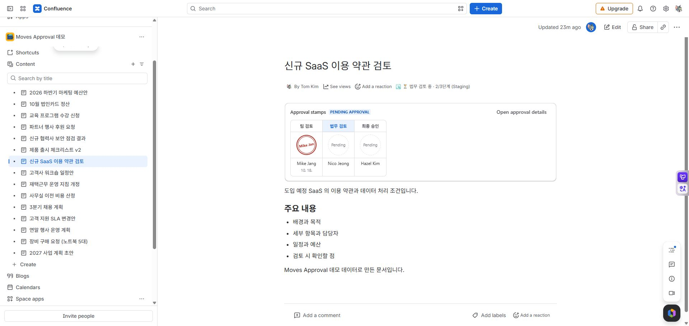

MOVES APPROVAL / 사용자 가이드
문서의 결재란
문서를 여는 사람이 승인 단계·결재자·결정 날짜를 바로 확인하도록 결재란을 배치합니다. 결재란은 승인 상태를 보여 주며, 삽입만으로 요청이 만들어지거나 문서가 승인되지는 않습니다.
문서에 넣기
자동 추가: 페이지 승인 요청에서 문서 맨 위에 결재란 추가를 선택합니다. 이미 있으면 다시 넣지 않습니다. 새로 삽입하면 요청자 권한으로 페이지 버전이 하나 오르고 그 버전을 승인 대상으로 삼습니다.
직접 추가: 페이지 편집기에서 / → Moves 결재란을 삽입하고 게시합니다. 원하는 위치나 문서 템플릿에 미리 넣을 수 있습니다. 요청이 없는 결재란의 요청 버튼은 편집 권한이 있는 사람에게 표시됩니다.

MA-11 · 게시된 결재란은 요청 상태와 단계별 결재 기록을 문서 본문에서 보여 줍니다.
결재란 읽기
| 표시 | 뜻 | 다음 확인 |
|---|---|---|
| 단계 이름 | 검토 순서와 현재 진행 단계 | 같은 단계에 여러 명이면 필요한 승인 수도 확인합니다. |
| 승인 도장·서명 | 해당 사람의 승인 결정 | 이름과 결정 날짜를 함께 읽습니다. |
| 반려 도장 | 해당 사람의 반려 | 상세에서 반려 사유를 확인합니다. |
| 대기 | 아직 결정하지 않음 | 앞 단계가 끝났는지 확인합니다. |
| 대리 표시 | 대리인이 결정 | 상세에서 실제 처리자를 확인합니다. |
| 현재 버전 미승인 안내 | 승인 이후 문서 수정 | 이전 승인 버전과 현재 버전을 비교합니다. |
결재 상세 열기에서 전체 결정과 이력을 확인합니다. 서명 표시 정책이 꺼져 있으면 도장 대신 글자가 보입니다. 페이지 결재란은 페이지 전체의 승인이고, 영역 결재란은 해당 영역 아래에 따로 표시됩니다.
결재란이 없거나 비어 있을 때
자동 삽입에 실패해도 요청 자체는 만들어졌을 수 있습니다. 먼저 승인 상세를 확인한 뒤 필요하면 직접 삽입합니다. 아직 결재 요청이 없습니다는 매크로 오류가 아니라 해당 대상에 요청이 없는 상태입니다.